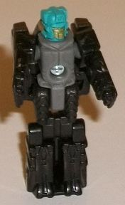
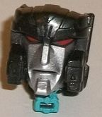
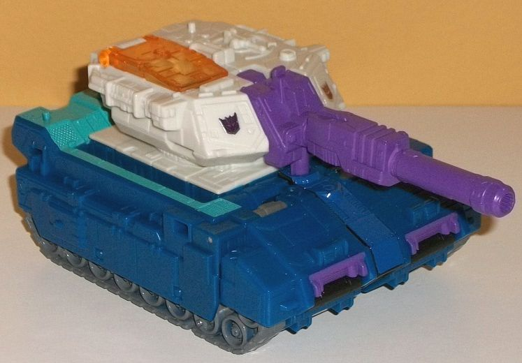
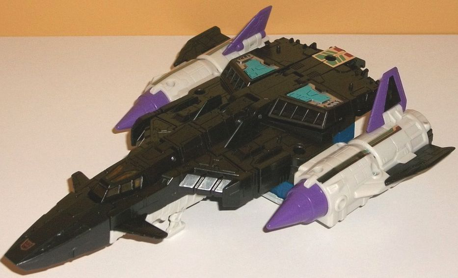
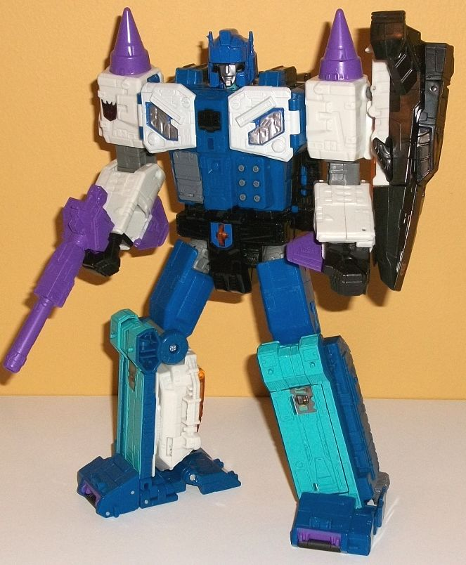
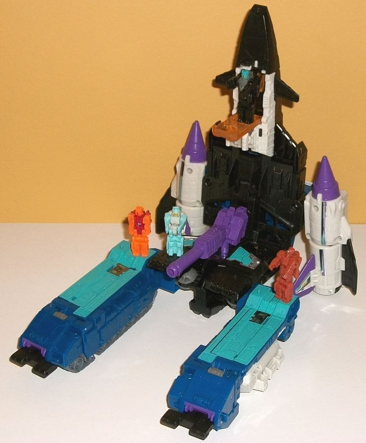

Allegiance
: Decepticon
Size:
Leader
Difficulty of Transformation to Base:
Medium
Difficulty of Transformation to Robot:
Medium
Color Scheme:
Black, moderately
dark blue, pearly white, and some chalky teal, chalky white, silver, moderately
dark gray, purple, transparent light orange, and moderately dark red
Rating:
8.9
(NOTE: Because this is a repaint, this is not a full-blown review. This mainly covers any changes made to the mold and the color scheme, and merely compares it to Titans Return Sky Shadow w/ Ominus. For a review on the mold itself, read the review of Titans Return Sky Shadow w/ Ominus here .)


Since Overlord is a
remold of Sky Shadow, "Dreadnaut" here is a remold of Ominus. In robot
mode, Dreadnaut is pretty darned straightforward; his limbs are black,
his main body is a fairly dark gray, and his head... his head actually
has PAINT! Boy oh boy! Yessir, the helmet of the head is painted a chalky
teal, with the face itself being silver. It's a pretty boring color scheme,
except for the head, which at least provides a bit of contrast. Dreadnaut
is based off of Giga, one of Overlord's two G1 partners, and actually has
some mold changes to the Titan Master robot mode because of it. Compared
to Ominus, the upper legs have several curved lines across them, the arms
are SLIGHTLY different with beefier shoulders with some minor symbols on
them, and the head is different with a knight-looking facemask, two eyes,
and a fairly complex but still square-ish helmet around it. The mold changes
in this mode are very unexpected but appreciated-- his colors fit Giga's
fairly closely as well (except for no teal chest), so that's a bonus, too.
In head mode, Dreadnaut forms the "core face" of Overlord. He's got a silver-painted,
grim face with narrowed red eyes, ridged eyebrow-like details around the
top of the face, and small little rectangular bits on the side of the chin.
Although the face may be a bit big if you do this, it's actually one of
few Leader-class Titan Master partners that could be put on a smaller figure
without a "helmet" around it and it still would look pretty decent.


Overlord is a pretty
substantial remold of Sky Shadow, but the actual "remold" is pretty simple.
Remember how there's two different parts to Sky Shadow-- the tank and the
jet? Well, the tank (mold-wise) is completely unchanged for Overlord; however,
the jet is COMPLETELY new, and a new mold. Let's go over the jet first.
In vehicle mode, it's a pretty sweet-looking, fairly futuristic jet, though
it's more angular compared to Sky Shadow's jet mode. It's got a fairly
long nosecone with two little fins hanging off said nosecone, a long black
body, and white jet thrusters and sides with wings that are ridiculously
small-- and really, other than those tiny wings, that's all the major bad
things I have to say about the new jet. It's pretty sweet overall, with
a nice silhouette (though I wish the ends of the jet thruster/wing parts
fit in more solidly with the back end of the jet, which has no molded-in
thrusters or anything like that). There's a flip-down landing gear underneath
the nosecone, though it has two little landing pad pieces instead of one
landing gear wheel-- a nice change of pace, overall. This is to keep the
jet mode level with the back end, which has Overlord's upper body pretty
obviously just... there... if you look at this mode from the underside.
However, even though it comes down from the body of the jet mode a fair
bit, the wideness of the jet mode-- and especially the side thrusters--
hide the robot bits on the underside pretty well. The mold detailing is
very well-done, with lots of panels and aerodynamic lines pretty much everywhere.
He's got two fairly pointy purple triangles at the front of his side thrusters,
which helps give him a pretty unique look there. The overall color scheme
is mostly black and off-white, so this portion of Overlord isn't nearly
as colorful as his tank half, at least in this mode. There's also a bit
of purple on the wings and the aforementioned purple triangles. There's
some transparent light orange plastic on the cockpit, which looks pretty
nice, though I wish it was just a bit lighter for better contrast. Of course,
as you'd expect, Dreadnaut can fit inside the cockpit. Finally, there's
some teal and silver paint near the rear of the main body to help break
up all that black (though I wish a few more similar paint apps were back
there). There's some of those annoying bad foil stickers on the back end--
which has some teal and red details on it-- and blue and purple-striped
stickers on the side thruster areas. There's four little pegs for Titan
Masters to stand on in this mode; two near the back end on the top, and
two on the top near the middle, in front of the vent-like details. Unfortunately,
unlike with Sky Shadow, the jet can't "combine" with the tank in the middle
on Overlord; they can only combine in their base and robot modes.


To transform Overlord's
upper half to robot mode, it's pretty darned easy-- just fold the front
section of the jet back, take off the cockpit section, then unfold the
arms from the thrusters and that's it. The front-mid section of the jet
mode hangs off Overlord's upper back, but otherwise he has no extras in
this mode. (His wings hang off his lower arms, but they're so small it's
generous to call them "extras"-- they just fold up against said lower arms).
The main body is a fairly dark blue, which contrasts very well with all
the off-white on his arms. There's also a bit of dark gray on the ab details
and on some other minor parts. He's got a very broad chest, and inside
you can fold open each pec to reveal a space for a Titan Master, which
calls back to Overlord's original G1 toy, which was a Double Breastmaster
(STOP LAUGHING!). The helmet is pretty well-sculpted and accurate to the
G1 toy, with a large forehead center crest and smaller antennae on the
sides. His face looks a bit small covered up with such a bulky helmet,
though. There's lots of cool details on the main body, like six small mini-guns
on the left side of the abs, a more armored dark gray portion on the right
side of the abs, and TONS of circular and rectangular details on the pecs.
The pecs are painted white with some silver in the center, but the white
paint isn't QUITE thick enough to completely cover the dark blue plastic
underneath it; the dark blue "bleeds through" a little and makes the white
seem a bit darker than it actually is. There's also some black on the middle
of the chest, and a foil Decepticon emblem sticker on the right shoulder,
but that's it for paint or stickers on this "new" upper half of the figure.
Overlord's nosecone piece plugs into his upper shoulder, which is G1-accurate,
but it doesn't really look like anything-- it's too small to be a shield.
He can hold in his hands as well, but again, it doesn't look like anything.
(You can keep it pegged in on the back, but then it hangs down much further
behind his back than just the otherwise small bit that hangs behind his
upper back regardless.)
To finish off one last
bit about how the new half looks in base mode-- unlike in Sky Shadow where
the arms splay out in base mode, for Overlord it's basically just the jet
mode sticking up on the back end of the base mode, with the tank portion
in the same position as on Sky Shadow. There is a transparent light orange
piece on the underside of the nosecone that folds down to form a small
cavity for a Titan Master to stand in, but otherwise-- yeah, it's just
the jet mode standing up. (Overlord does have the same ability to have
the two rear sections of the jet mode fold down for the base mode, so that
connection with the tank mode in the center still works the same with this
toy.)
As for the directly-redecoed
bit-- that is, the tank-- it's fairly colorful, certainly moreso than Overlord's
other half. The body of the turret section is off-white; the gun and small
sections of the front of the tank are purple; there's dark blue plastic
on most of the rest of the tank mode and on the upper legs of the robot
mode; some black and a bit of transparent light orange and blue on the
robot waist; a transparent light orange cockpit; moderately dark gray on
the hips and treads; and last but certainly not least, chalky teal on most
of the front of the lower legs. The teal really makes the color scheme
pop, as it both complements and contrasts against the blue quite well.
The bits of purple also look particularly great. The tank has some of those
awful foil stickers as well, unfortunately; there's one on each leg, slightly
below the knees, that has a few simplistic mechanical details on them,
and there's two small foil Decepticon emblems on the front of the tank
turret. Meh.
Titans Return Overlord has the odd honor of clearly being what the mold was primarily designed for (the proportions in robot mode; having separate jet & tank alt modes that had nothing to do with Sky Shadow before this more recent version; a large imposing robot mode; the general details on the tank and how they combine), but I actually think he's slightly below Sky Shadow in terms of the desirability of the mold. Overlord has a more vibrant color scheme and some cool details on the chest, but his jet mode doesn't look as good as Sky Shadow's to me, and Sky Shadow's robot mode also looks a bit better, and his base mode is a bit more involved. Still, if you're a fan of Overlord, this certainly isn't a BAD toy of him, by any means; a very easy recommendation.
Review by Beastbot